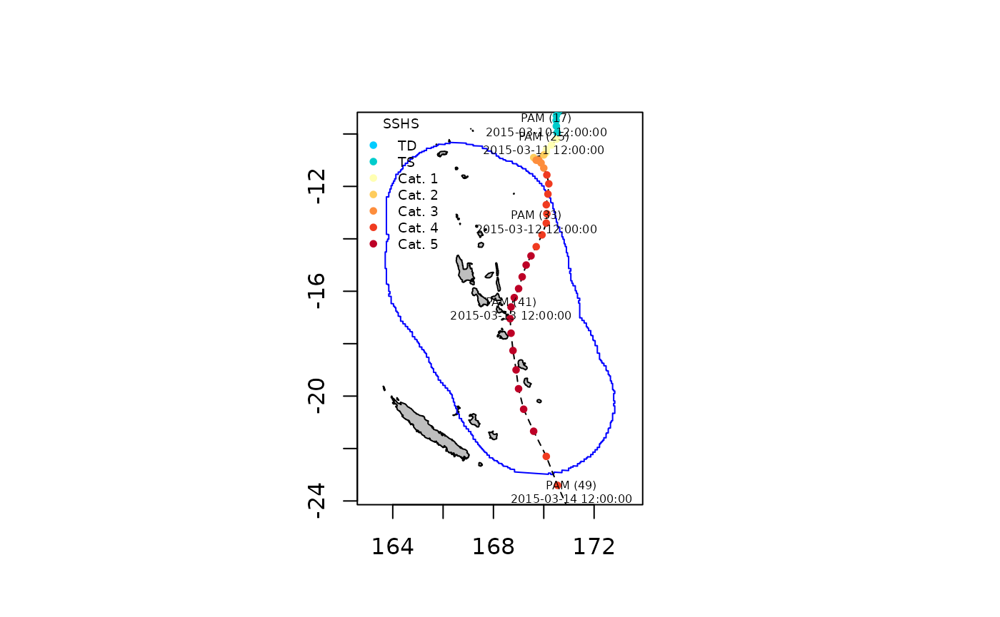
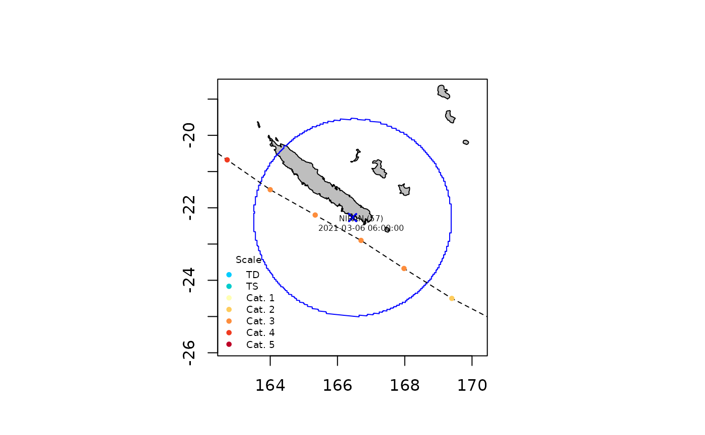
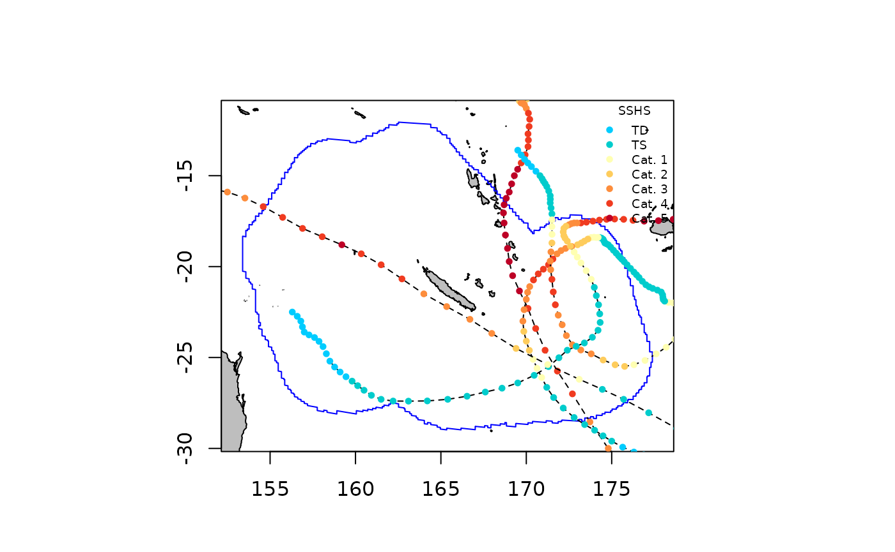

The defStormsList() function allows to extract tropical
cyclone track data for a given tropical cyclone or set of tropical
cyclones nearby a given location of interest (loi). The
loi can be defined using a country name, a specific point
(defined by its longitude and latitude coordinates), or any user
imported or defined spatial polygon shapefiles. By default only
observations located within 300 km around the loi are
extracted but this can be changed using the max_dist
argument. Users can also extract tropical cyclones using the
name of the storm or the season during which
it occurred. If both the name and the season
arguments are not filled then the defStormsList() function
extracts all tropical cyclones since the first cyclonic season in the
database. Once the data are extracted, the plotStorms()
function can be used to visualize the trajectories and points of
observation of extracted tropical cyclones on a map.
In the following example we use the test_dataset
provided with the package to illustrate how cyclone track data can be
extracted and visualised using country and cyclone names, specific point
locations, and polygon shapefiles, as described below.
Getting and ploting tropical cyclone track data
Using country names
We extract data on the tropical cyclone Pam (2015) nearby Vanuatu as follows:
sds <- defStormsDataset(verbose = 0)## Warning in checkInputsdefStormsDataset(filename, sep, fields, basin, seasons, : No basin argument specified. StormR will work as expected
## but cannot use basin filtering for speed-up when collecting data
st <- defStormsList(sds = sds, loi = "Vanuatu", names = "PAM", verbose = 0)The defStormsList() function returns a
stormsList object in which the first slot
@data contains a list of Storm objects. With
the above specification the stormsList contains only one
Storm object corresponding to cyclone PAM and the track
data can be obtained using the getObs() function as
follows:
## iso.time lon lat msw scale rmw pres poci
## 1 2015-03-08 12:00:00 168.9000 -7.500000 13 0 93 100400 100500
## 2 2015-03-08 15:00:00 169.0425 -7.652509 14 0 93 100200 100200
## 3 2015-03-08 18:00:00 169.2000 -7.800000 15 0 93 100000 100000
## 4 2015-03-08 21:00:00 169.3850 -7.942489 15 0 93 100000 100000
## 5 2015-03-09 00:00:00 169.6000 -8.100000 15 0 93 100000 100100
## 6 2015-03-09 03:00:00 169.8425 -8.284999 16 0 93 99800 100100The number of observation and the indices of the observations can be
obtained using the getNbObs() and getInObs()
as follows:
getNbObs(st, name = "PAM")## [1] 57
getInObs(st, name = "PAM")## [1] 28 29 30 31 32 33 34 35 36 37 38 39 40 41 42 43 44 45 46 47The data can be visualised on a map as follows:
plotStorms(st, labels = TRUE)
Using a specified point location
We can extract all tropical cyclones near Nouméa (longitude = 166.45, latitude = -22.27) between 2015 and 2021 as follows:
pt <- c(166.45, -22.27)
st <- defStormsList(sds = sds, loi = pt, seasons = c(2015, 2021), verbose = 0)The number, the names, and the season of occurrence of the storms in
the returned stormsList object can be obtained using the
getNbStorms(), getNames(), and
getSeasons() functions as follows:
getNbStorms(st)## [1] 4
getNames(st)## [1] "SOLO" "GRETEL" "LUCAS" "NIRAN"
getSeasons(st)## SOLO GRETEL LUCAS NIRAN
## 2015 2020 2021 2021We can plot track data for the topical cyclone Niran only using the
names argument of the plotStorms() function as
follows:
plotStorms(st, names = "NIRAN", labels = TRUE, legends = "bottomleft")
The track data for Niran can also be extracted and stored in a new
object using the getStorm() function as follows:
## [1] "NIRAN"Using a user defined spatial polygon shapefile
We can extract all tropical cyclones that occurred between 2015 and
2021 near the New Caledonia exclusive economic zone using the
eezNC shapefile provided with the StormR
package as follows:
sp <- eezNC
st <- defStormsList(sds = sds, loi = eezNC, season = c(2015, 2021), verbose = 0)Information about the spatial extent of the track data exaction can
be obtained using the getLOI(), getBuffer(),
and getBufferSize() functions as follows:
Using different wind scale
By default the Saffir-Simpson hurricane wind scale (SSHS) is used in
defStormsList() to assign level to storms.
The maximum level reached in the scale for each cyclone can then be
obtained using the getScale() function as follows:
getScale(st)## PAM SOLO ULA WINSTON ZENA UESI GRETEL LUCAS NIRAN
## 6 1 5 6 3 2 2 2 6In this case, the SSHS scale is composed of 6 thresholds resulting in 6 levels spanning from level 0 to level 6.
We can only plot cyclones that reached level 5 and 6 using the
category argument of the plotStorms() function
as follows:
plotStorms(st, category = c(5, 6), labels = FALSE, legends = "topright")
Finally, the user can choose his own scale and associated palette, by
setting the scale and scalePalette inputs in
defStormsList(). In the following example, we use the
Tokyo’s tropical cyclone intensity scale to analyse tropical storm
PAM.
StormR provides default palette and category names:
# Tokyo's tropical cyclone intensity scale
RSMCScale <- c(16.94, 24.44, 32.5, 43.33, 53.61)
sts_jpn <- defStormsList(sds = sds,
loi = "Vanuatu",
names = "PAM",
scale = RSMCScale,
verbose = 0)
plotStorms(sts_jpn)
But you can also easily customize them:
RSMCPalette <- c("#6ec1ea", "#4dffff", "#c0ffc0", "#ffd98c", "#ff738a", "#a188fc")
names(RSMCPalette) <- c("Tropical depression",
"Tropical storm",
"Severe tropical storm",
"Typhoon",
"Very strong typhoon",
"Violent typhoon")
sts_jpn <- defStormsList(sds = sds,
loi = "Vanuatu",
names = "PAM",
scale = RSMCScale,
scalePalette = RSMCPalette,
verbose = 0)
plotStorms(sts_jpn)
Dynamic plot
plotStorms allows the user to dynamically plot tracks
within an interactive map using leaflet library by setting
dynamicPlot to TRUE. Doing so, the user can
explore the map the way he wants and click and each dotted colored
observations to see there informations.
# Example of dynamic plot, using the same parameters above
plotStorms(st, category = c(4, 5), labels = FALSE, legends = "topright", dynamicPlot=TRUE)